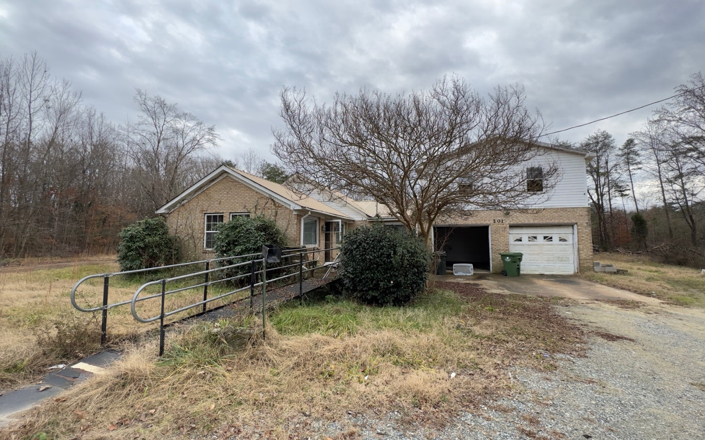

High Point NC
Cash home buyer options for High Point sellers.
If your High Point property is hard to prepare for the open market, a direct as-is offer may be worth comparing.
What a cash buyer can simplify.
A direct sale can reduce repair decisions, repeated showings, inspection negotiations, and buyer financing risk. That convenience has value, but it should be weighed against what the home might sell for after repairs and market exposure.
- Older systems or cosmetic issues.
- Estate properties.
- Rental homes with tenants or turnover repairs.
- Owners who want fewer steps before closing.

High Point and Guilford County
Condition, access, and timing shape the right selling path.
A High Point property may be ready for a traditional listing, or it may need roof, HVAC, flooring, cleanout, tenant coordination, or other work first. We review the complete situation instead of assuming every owner should make the same choice.
If listing appears likely to produce a better result after costs and preparation, compare that path. If the repairs and uncertainty are the real problem, compare an as-is offer.
The property address, known repairs, occupancy status, access details, and the timeline you would prefer. You do not need contractor estimates before calling.
Request a High Point property review.
Phone and street address are required. Email and name are optional. Submitting the form does not obligate you to sell.
Can I leave belongings in the house?
Tell us what needs to remain. Cleanout can be considered in the property review.
How is the offer calculated?
We consider likely resale value, repairs, cleanout, holding and selling costs, and risk. See the full explanation.
How do I compare buyers?
Ask about proof of funds, inspections, assignments, costs, and cancellation terms. Use our cash buyer checklist.